SEO, UU, Microdata & Meta-data
Målet med oblig 4, som er den siste obligen for dette emnet, er å forstå grunnleggende prinsipper innen søkemotoroptimalisering (SEO), web-tilgjengelighet og bruken av microdata for å oppnå mer detaljerte søkeresultater. Vi skal også kunne gjennomføre en tilgjengelighetsanalyse av et nettsted og identifisere muligheter for forbedring innen SEO.
Videre skal vi kunne implementere konkrete tiltak for å forbedre nettstedets SEO, tilgjengelighet, og bruk av microdata for å oppnå rikere søkeresultater.
Nøkkelord
Valget av disse nøkkelordene er valgt ut for å optimalisere synligheten og tilgjengjeligheten til skobutikken, SNKR., som tilbyr trendy sneakers og bestselgere innen skomote. Her er geografiske områder, interesse og populæritet tatt med i betrakning.
Ved å inkludere denne variasjonen av nøkkelord, har jeg sikret en bred dekning som appelerer til målgruppen min i tillegg til forskjellige interesser og behov innen sneakers.
Nøkkelord for produktside og forside:
"SNKR, snkr, sko, sneakers, relaterte produkter, lignende produkter, merker, støvletter, damesko, herresko, barnesko, vintersko, høstsko, sommersko, fritidsko, skomote, skobutikk, sko på salg, sko salg,
komfortable sko, joggesko, boots, hvite sneakers, hvite sko, svarte sneakers, svarte sko, sorte sko, skopleie, skotilbehør,new balance, ugg, uggs, nike, adidas, vagabond, air max, air force, gazelle, sko tilbud"
Nøkkelord for hjelpside:
SNKR, snkr, sko, hjelp, kundeservice, retur, frakt, bestillinger, min side, logg inn, betaling, kontaktinformasjon, størrelsesguide, chat, personvern, rabatter, rabattkoder, tilbud, levering, bytte, reklamasjon, sporing, ordrebekreftelse, avbestille, ordrenummer"
UU (Accesibility)
I dette tilfellet var det ingen store endringer som måtte forbedres.
For å oppnå høyest mulig score har jeg blant annet lagt til mørkere kontrastfarge i header og footer, endret skriftstørrelse,
lagt til navn på enkelte linker som manglet dette og endret rekkefølgen i h-tagger. Før og etterbilder av nettstedet ligger under "Forbedringer". Endringene er også kommentert i html-filene og css.
UU - Lighthouse - Before
Forside:
Advarselmeldinger:
- For liten kontrast mellom bakgrunnsfarge og skrift.

Hjelpside:
Advarselmeldinger:
- For liten kontrast mellom bakgrunnsfarge og skrift.
- Linker mangler beskrivende navn

Produktside:
Advarselmeldinger:
- For liten kontrast mellom bakgrunnsfarge og skrift.
- Linker mangler beskrivende navn

UU - Lighthouse - After
Forside:
Forbedrende tiltak:
- Lagt til mørkere bakgrunnsfarge i header, footer og "Bli-medlem"-seksjon for lavere kontrast

Hjelpside:
Forbedrende tiltak:
- Lagt til mørkere bakgrunnsfarge i header og footer for lavere kontrast
- Navigeringspil har fått tekst: "Hjem"

Produkside:
Forbedrende tiltak:
- Lagt til mørkere bakgrunnsfarge i header og footer for lavere kontrast
- Navigeringspil har fått tekst: "Hjem"

UU - WebAIM - Before
Forside:
Advarselmeldinger:
- Lav kontrast mellom bilder og skrift
- For liten skrift under bilder
- Skrift som er linket til produktsiden (overflødig link)
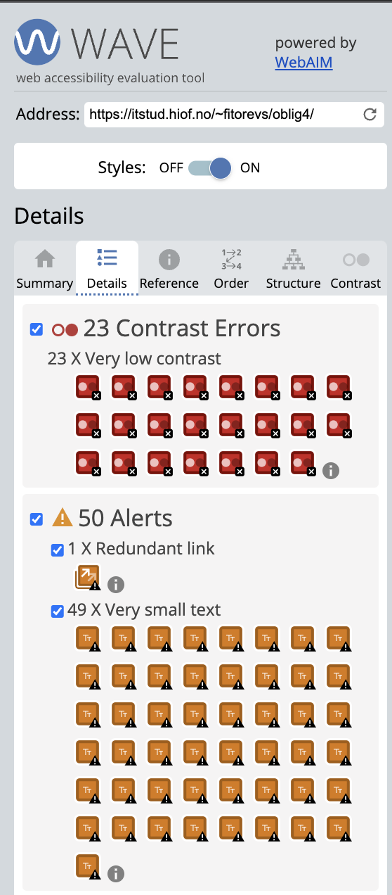
Hjelpside:
Advarselmeldinger:
- Navigeringspil mangler tekst
- Lav kontrast mellom bilder og skrift
- Mangler h1
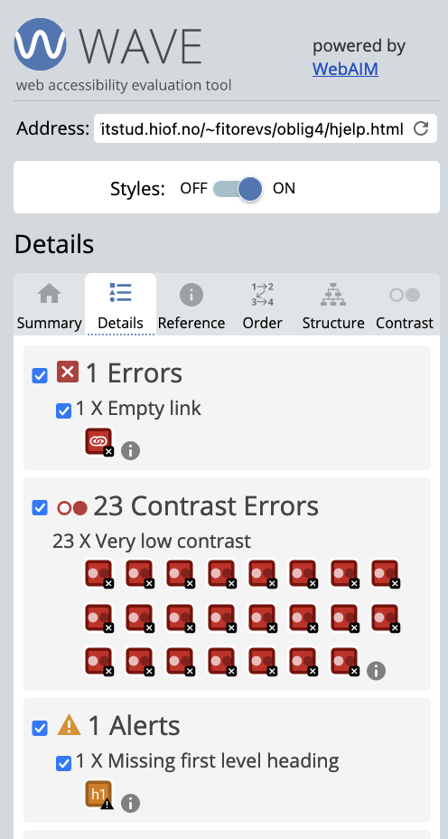
Produktside:
Advarselmeldinger:
- Navigeringspil mangler tekst
- Lav kontrast mellom bilder og skrift
- Mangler h1
- For liten skrift under bilder
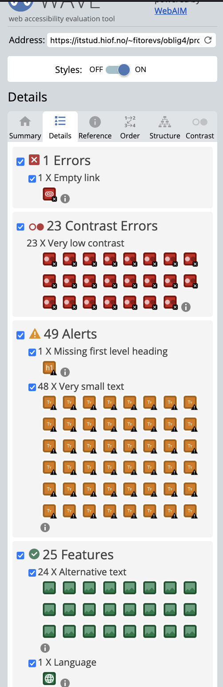
UU - WebAIM - After
Forside:
Forbedrende tiltak:
- Lagt til mørkere bakgrunnsfarge i header, footer og bli-medlem-seksjon
- Øket skriftstørrelse
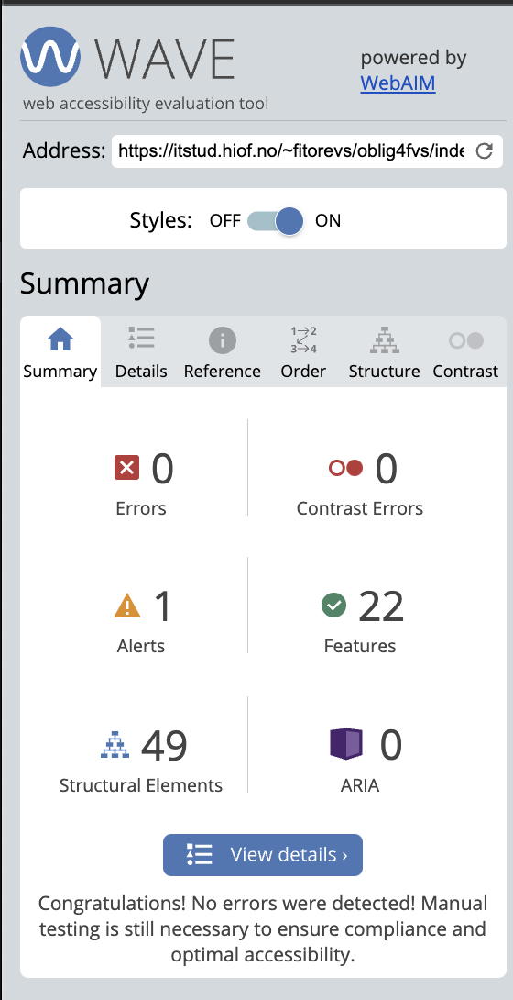
Hjelpside:
Forbedrende tiltak:
- Navigeringspil har fått tekst: "Hjem"
- Lagt til mørkere bakgrunnsfarge i header og footer
- Lagt til h1
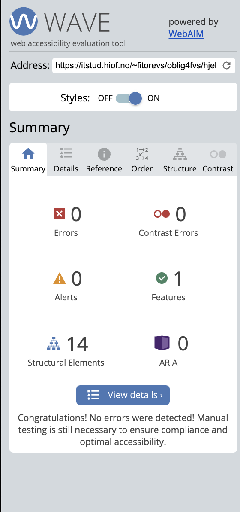
Produktside:
Forbedrende tiltak:
- Navigeringspil har fått tekst: "Hjem"
- Lagt til mørkere bakgrunnsfarge i header og footer
- Lagt til h1
- Øket skriftstørrelse
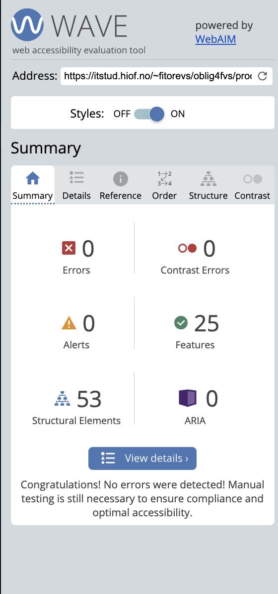
SEO
I dette tilfellet var det også lite endringer som måtte forbedres. Samme advarsler går igjennom: liten skrift og manglende meta-beskrivelse. Endringene er også kommentert i html-filene og css.
SEO - Before
Forside:
Advarselmeldinger:
- Mangler meta description
- For liten skriftstørrelse

Hjelpside:
Advarselmeldinger:

Produktside:
Advarselmeldinger:

SEO - After
Forside:
Forbedrende tiltak for SEO:
- Lagt til meta description
- Øket skriftstørrelse
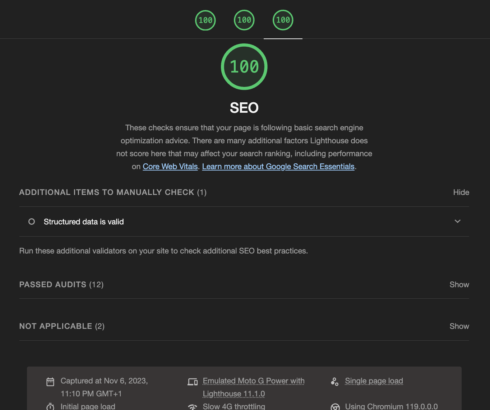
Hjelpside:
Forbedrende tiltak for SEO:
- Lagt til meta description
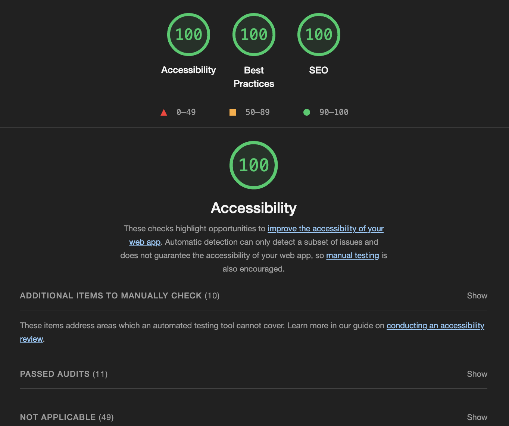
Produktside:
Forbedrende tiltak for SEO:
- Lagt til meta description
Forside:
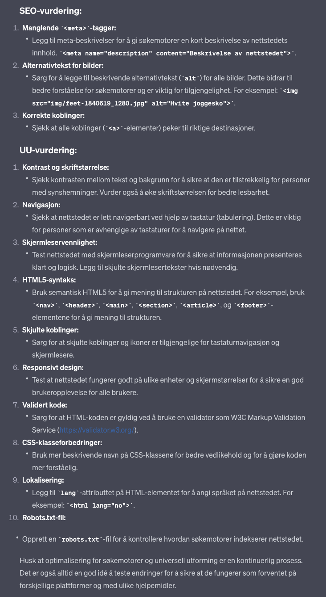
Hjelpside:
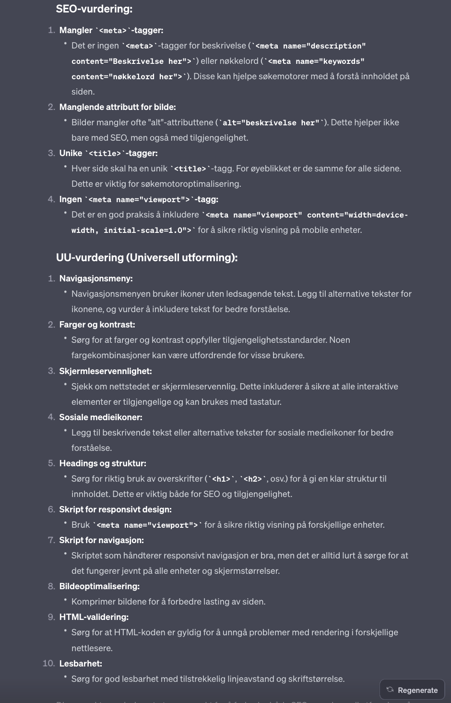
Produktside:
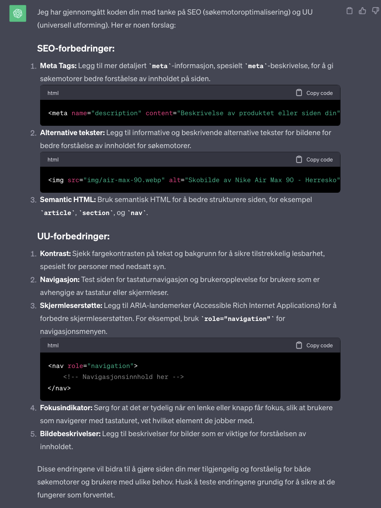
Resultater
Gjennom analaysen av UU og SEO ble det oppdaget felles feil på nettstedet. Disse inkluderte blant annet liten skrift enkelte steder,
manglende beskrivelse av linker, manglende meta description, og lav kontrast i farger. Å gjøre disse endringene vil ikke bare øke tilgjengjeligheten
for alle brukere, men også positivt påvirke nettstedets synlighet i søkemotorresultatene. Dette viser at tiltak for å forbedre
både UU og SEO kan gi gjensidige fordeler og resultere til en mer brukvennlig og synlig nettside.
Det er tydelig at ChatGPT hadde flere omfattende svar om SEO og UU sammenlignet med Lighthouse og WebAIM, men det er ikke all informasjon som kan betraktes som pålitelig.
ChatGPT er likevel et verdifullt verktøy å bruke for sammenligning av svar med andre verkøy.
Nedenfor er det laget en tabell som viser resultatene av analysen som ble gjort i Lighthouse, WebAIM og ChatGPT:
SEO & UU Results
| Lighthouse |
WebAIM |
ChatGPT |
- Liten kontrast mellom bakgrunn og skrift
- Manglende tekst til linker
- Liten skrift enkelte stedet
- Manglende meta description
|
- Liten kontrast mellom bakgrunn og skrift
- Manglende tekst til linker
- Liten skrift enkelte stedet
- Manglende h1-tagger
|
- Manglende meta-tagger
- Manglende ARIA-attributter
- Alt-tekst for alle bilder
- Kontrast og skriftstørrelse
- Navigering ved hjelp av tastatur
- Lang-attributt:"nb"
- Validert kode
- Riktig bruk av overskrifter (h1-h6)
|
Forbedringer
Gjennom denne prosessen har jeg gjort visse endringer i html og css for bedre funksjonalitet i nettsiden.
Under ligger før og etterbilder av endringer som har blitt gjort. Endringene er også kommentert i html-filene og css.
Before & After:
Mørkere farge i både header og footer.
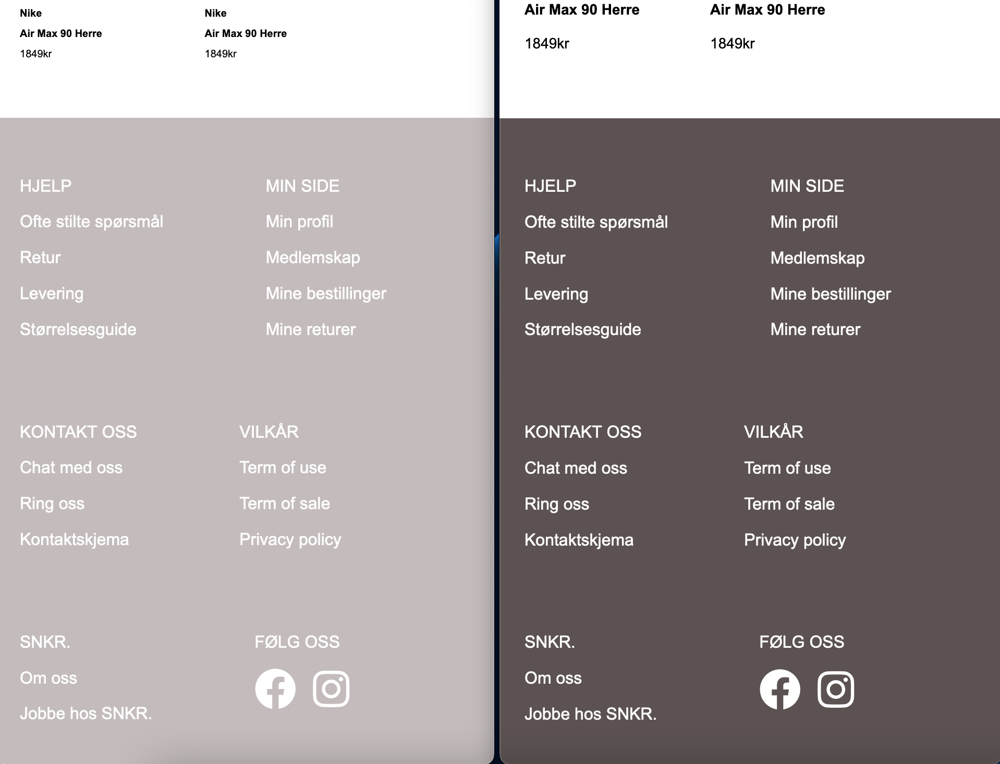
Before & After:
Venstrepil har nå tekst. Brødsmulestien er nå kodet riktig i html da det tidligere var koden som en p-tag.
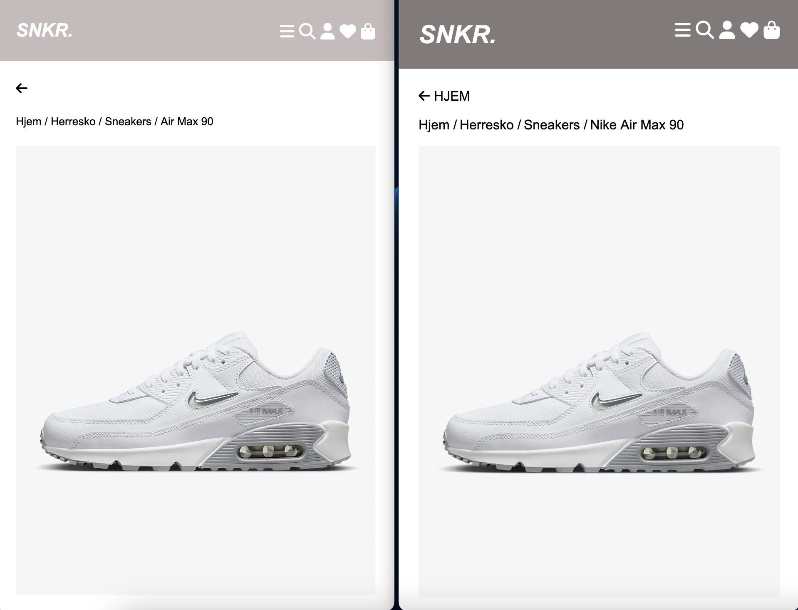
Before & After:
"SHOP NOW"-knapp ligger nå oppå bildet.
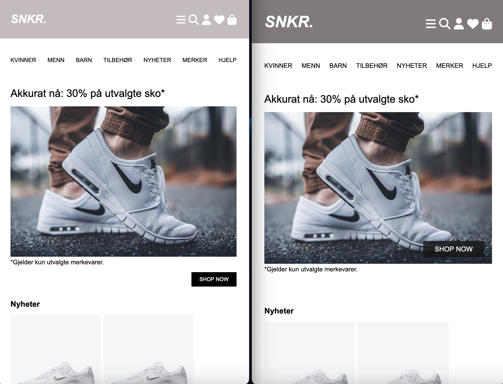
Before & After:
Større skrift i bli-medlem-seksjon.
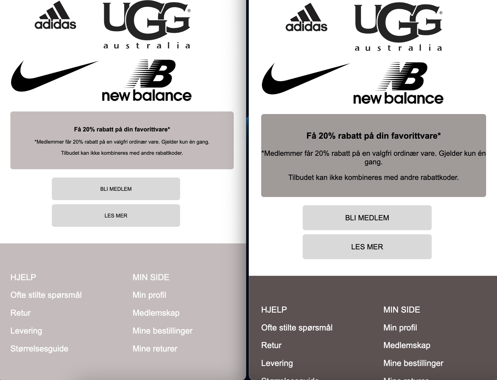
Before & After:
Handlekurv- og favorittknapp er nå kodet som "button". Det er også lagt til "size"-knapp.
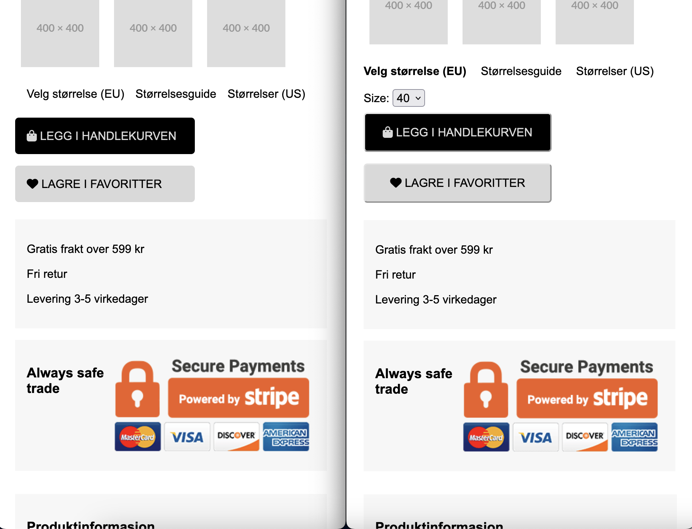
Before & After:
Større skrift under produktbilder.
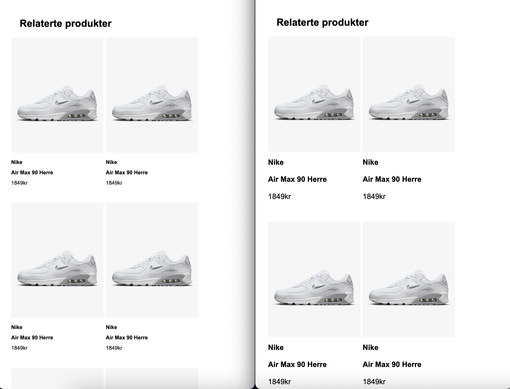
Before:
Navbar ville tidligere ikke bli synlig i desktop.

After:
Navbar er nå synlig i dekstop.

Skjermleserkompatibilitet
For å utføre skjermleserkompatibiliteten har jeg tatt i bruk Mac sin innebygde skjermleser.
Ved å markere alt innholdet på nettsiden min, leser skjermleseren dette opp. Gjennom utførselen av hele nettsiden, har jeg bekreftet at skjermleseren korrekt leser opp tekstlig informasjon
og innhold på siden. Det er viktig å merke at ikoner på siden ble ikke korrekt identifisert eller lest opp av skjermleseren.
Dette indikerer på at det er nødvendig å implementere ekstra tilgjengelighetsfunksjoer for å sikre at alle elementer på nettsiden, inkludert ikoner, blir riktig tolket og formidlet av skjermlesere.
Tastaturnavigasjon
Tastaturnavigasjon spiller en viktig rolle i utformingen av nettsider, og det er avgjørende for å sikre tilgjengelighet og brukervennlighet for alle besøkende.
Eter flere forsøk, fant jeg ut at tastaturnavigasjon ikke fungerte som forventet i Firefox, men det fungerte problemfritt i Chrome. Dette er er en observasjon jeg vil ta med meg for fremtidige tilfeller til andre ganger.
Jeg er i imidlertid usikker på årsaken til denne forskjellen i oppførsel mellom nettleserne.
En skip til hovedinnhold-snarvei er lagt til på alle sidene:
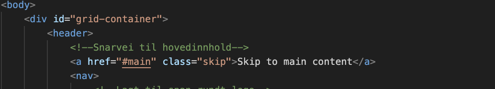
ARIA-attributter
I koden har jeg implentert ARIA-attributter for å forbedre tilgjengeligheten for brukere med nedsatt syn.
ARIA (Accessible Rich Internet Applications) er et sett av standardattributter som gir ekstra informasjon til skjermlesere om strukturen og interaktiviteten til nettstedets innhold (ChatGPT, 2023).
Denne implementeringen sikrer en bedre opplevelse for brukere med nedsatt syn ved å gi dem riktig kontekst og informasjon om grensesnittets struktur, og hjelper skjermlesere med å tolke og formidle innholdet på en mer meningsfull måte.
Dette er et skritt mot å gjøre nettstedet mer tilgjengelig og brukervennlig for alle.
Under har jeg lagt ved skjermbilder av de ulike ARIA-attributtene som har blitt lagt til i koden for forside-, produkt- og hjelpside:
Microdata & Rich Result
I arbeidet med nettbutikken, har jeg integrert fornuftig microdata for å forbedre synligheten slik at søkemotrene forstår innholdet bedre.
Denne tilnærmingen gir ikke bare en strukturert og meningsfull presentasjon av dataene, men gjør også nettstedet lettere kan dukke opp i søketreffene på Google på en mer nøyaktig måte. For å validere denne impleminteringen har jeg benyttet Google sin test for rike resultater.
Ved å inkludere relevante microdata-elemeter har jeg sørget for at informasjonen på nettstedet blir tolket mer presist av søkemoterer, noe som resulterer i mer nøyaktige og nyttige søkeresultater for brukerne. Dette er spesielt viktig når det gjelder produktdetaljer, priser og andre viktige opplysninger og utvalget av sko i nettbutikken.
Rich Result
I Google sin test for rike resultater fikk produktsiden 7 gyldige elementer. Blant de gydlige elementene var det noen ikke-kritiske elementer. Jeg prøvde å løse disse, men fant ut at det var enkelte ting som ble for avanserte for meg, og velget å gjøre jobben lettere for meg selv ved å gjøre de endringene jeg klarte løse.
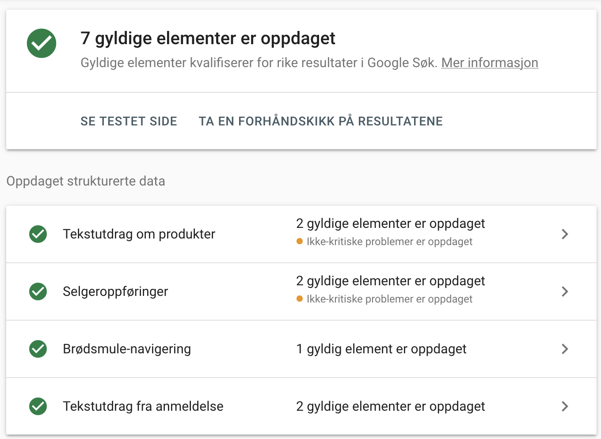
Microdata i HTML-kode
Under er det lagt ved bilder av microdataen som er tilføyet i koden.
Meta & SOME
I denne delen av oppgaven har jeg implementert meta-tags og meta-data i koden for å optimalisere nettstedet, SNKR.no.
Dette sikrer ikke bare en bedre forståelse av innholdet for søkemotorer, men gir også en rikere opplevelse for brukere som deler lenker på sosiale medier.
Dette arbeidet er for å gjøre nettsiden mer synlig og tiltrekkende, både for søkemotorer og for de som deler vårt innhold på sosiale medier.
I den generelle metadata-seksjonen har jeg inkludert nøkkelinformasjon som beskrivelse, nøkkelord og forfatter. Dette gir søkemoterer kontekst og brukerne en rask oversikt over hva de kan forvente fra nettbutikkens brede utvalg av sko.
For deling på facebook har jeg lagt til spesifikke metadata-elementer, som tittel, nettadressen til siden, en kort beskrivelse og et bildealternativ. Dette gjør at lenker som deles på plattformen, vises på en engasjerende måte med riktig informasjon og et visuelt
tiltaltende bilde av populære Nike Air Max 90-sko.
Metadata for forside:
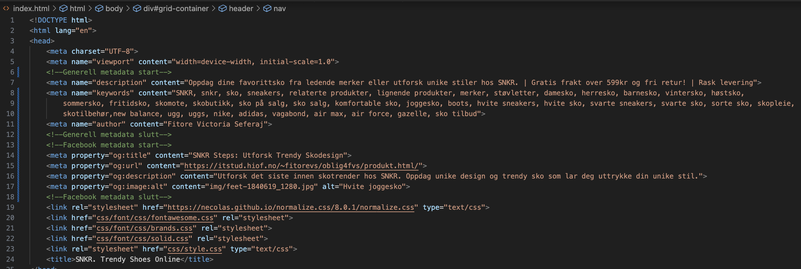
Metadata for hjelpside:
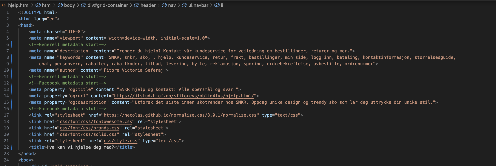
Metadata for produktside:
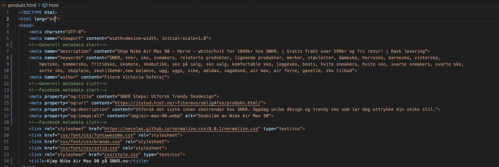
Link til GitHub-Repository
https://github.com/fitorevs/FVS_oblig4.git